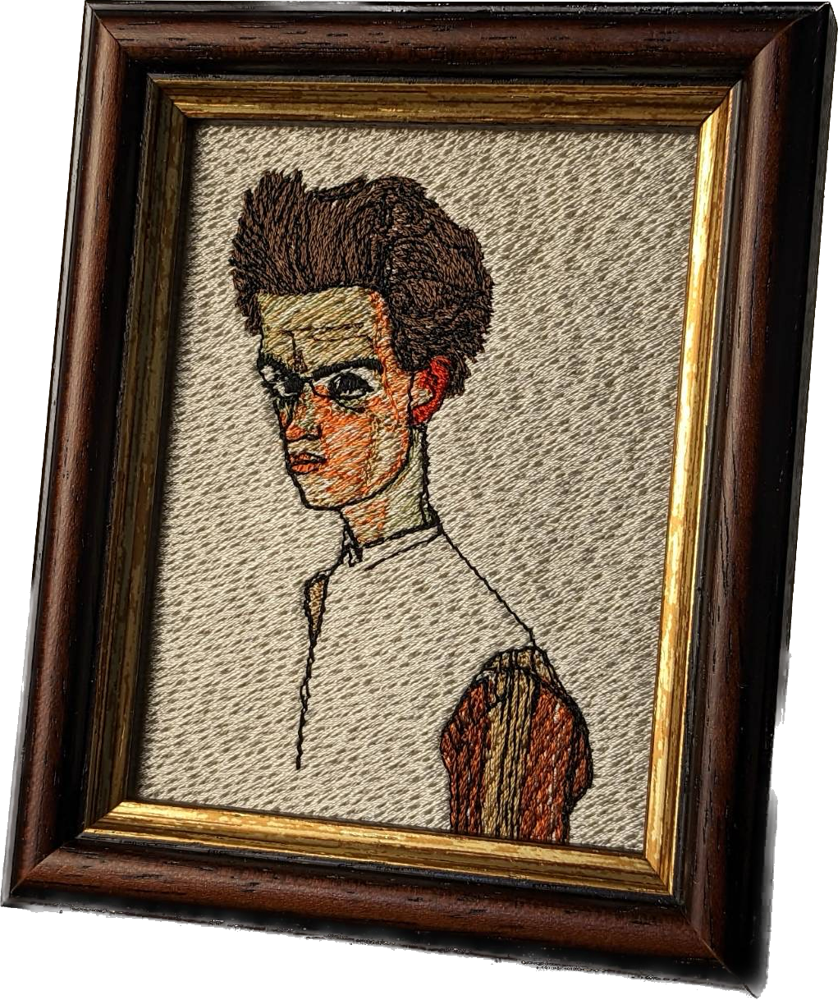
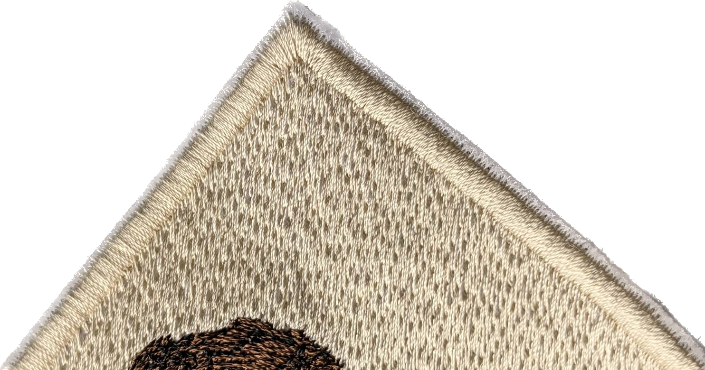

Das nachhaltige Sticklabel aus Wien
✦
Ausgewählte Materialien
Ob biologisch abbaubarer Garn oder Leinen aus dem Mühlviertel.
Wir verwenden ausschließlich hochwertige Materialien.
✦
Lokale Handarbeit
Gestickt wird in Wien, und zwar auf Bestellung.
Wir produzieren nur das, was auch wirklich gebraucht wird,
und unterstützen somit das Konzept von Slow Fashion.

✦ Onlineshop kommt 2023 ✦
Wir befinden uns noch ganz am Anfang einer spannenden Reise.
Hier findest du schon bald Einblicke hinter die Kulissen und die coolsten Gewinnspiele:
Instagram
🪡 💗🧵
Firma KINDL
Seidengasse 10
1070 Wien
Österreich
Diese Webseite sammelt keine Cookies
und keine personenbezogenen Daten.
